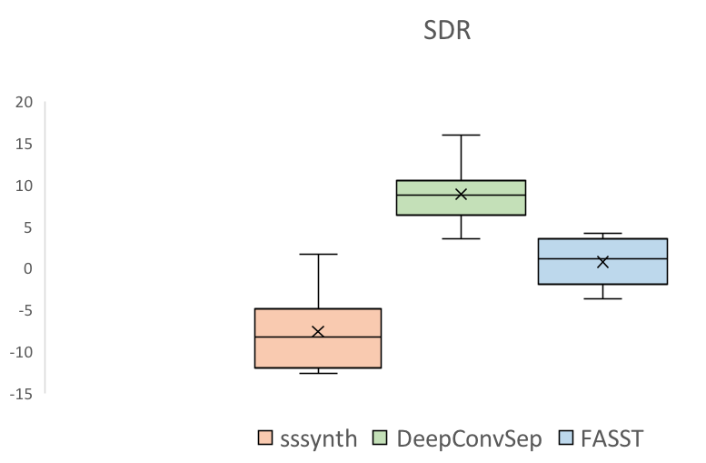
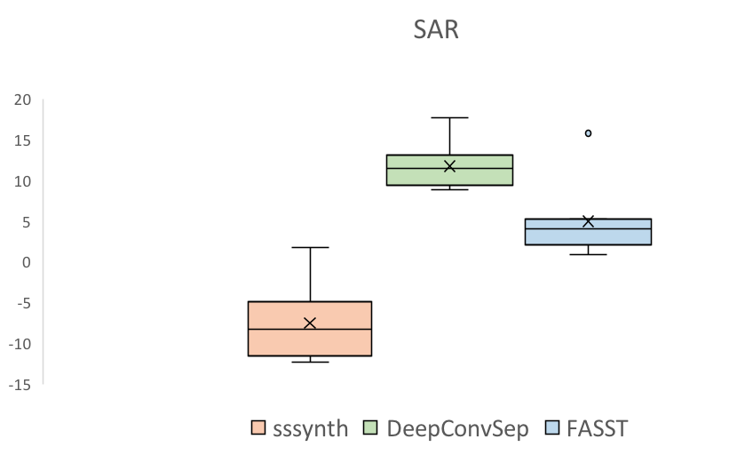
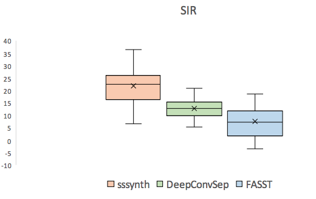
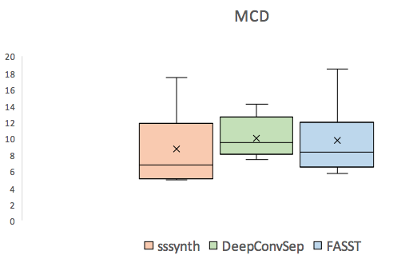

These examples showcase the application of the methodology on a real world example. The system has neither been trained on the singer nor the langauge, but still gives a decent output.
MusicDelta_Reggae

The SDR metric from the BSS Eval toolkit for the three systems to be compared.

The SAR metric from the BSS Eval toolkit for the three systems to be compared.

The SIR metric from the BSS Eval toolkit for the three systems to be compared.

The Mel Cepstral Distrotion (MCD), in dB, for the three systems compared .
[1] P. Chandna, M. Miron, J. Janer, and E. Gómez, “Monoaural audio source separation using deep convolutional neural networks” International Conference on Latent Variable Analysis and Signal Separation, 2017.
[2] A. Ozerov, E.Vincent, and F. Bimbot, “A general flexible framework for the handling of prior information in audio source separation,”IEEETransactions on Audio, Speech, and Language Process-ing, vol. 20, no. 4, pp. 1118–1133, 2012.
[3] R. Bittner, J. Salamon, M. Tierney, M. Mauch, C. Cannam and J. P. Bello, "MedleyDB: A Multitrack Dataset for Annotation-Intensive MIR Research", in 15th International Society for Music Information Retrieval Conference, Taipei, Taiwan, Oct. 2014.